El flujo de gobierno está en el clúster: validar, registrar, servir.
El registry de Databricks está simulado (PVC + model.json, no un bundle MLflow).
Capturas del sandbox OpenTLC, 15 sep 2026.
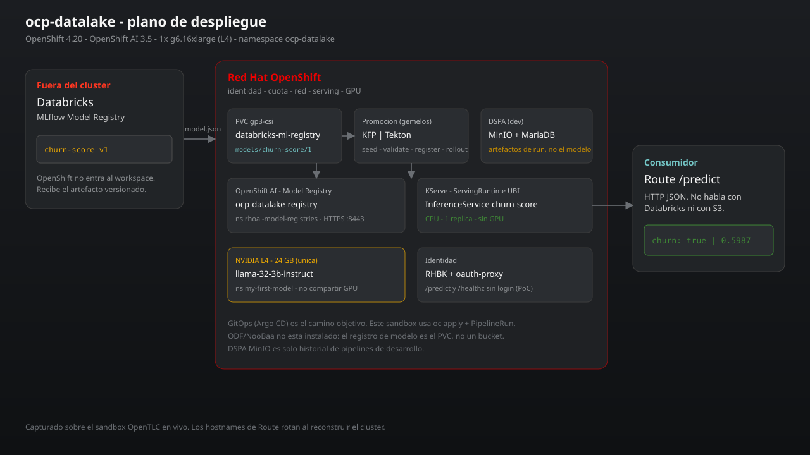
Step 01El planoOpenShift no entra al workspace. Hoy el artefacto es model.json (coeficientes), no un directorio MLflow. El PVC simula el registry.
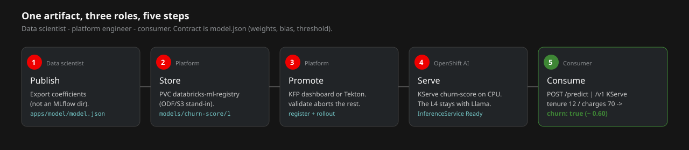
Step 02Cinco pasosPublicar en este PoC es el seed del JSON. No hay cliente Databricks. Si validate falla, no corren register ni rollout.
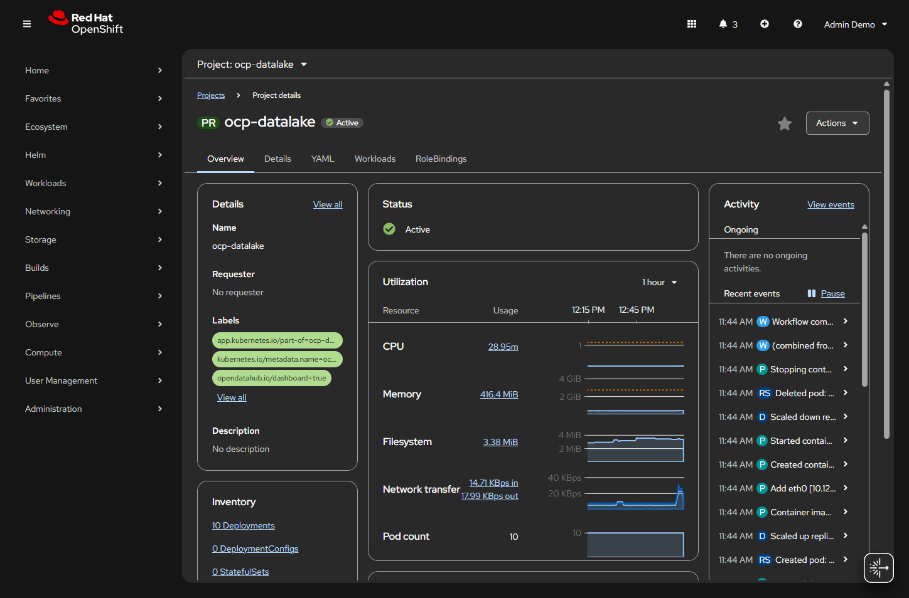
Step 03Proyecto ocp-datalakeNamespace Active en OpenShift 4.20. Diez Deployments, diez pods. Acá viven el predictor, DSPA y el PVC del modelo.
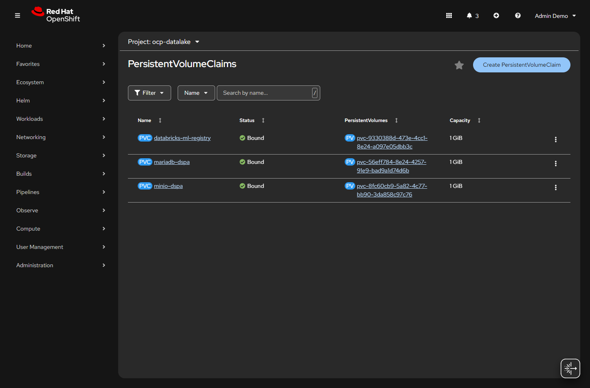
Step 04El artefacto vive en un PVCdatabricks-ml-registry es el stand-in de ODF/S3. MinIO y MariaDB son solo historial de DSPA (dev).
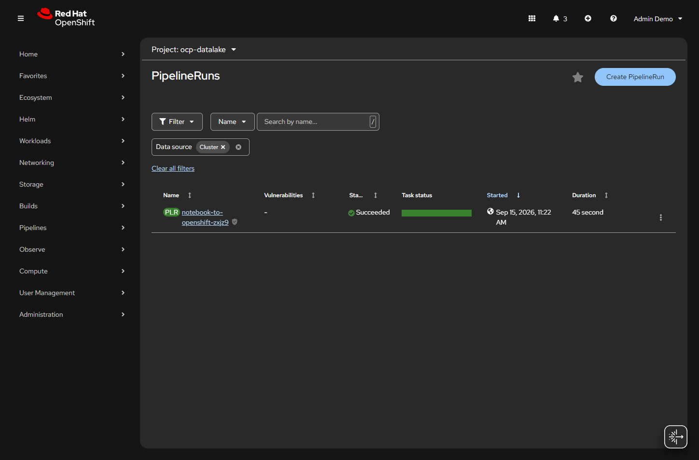
Step 05Gemelo Tektonnotebook-to-openshift-zxjz9 Succeeded en 45 s. Misma promoción que KFP, disparada con oc create -f manifests/08-pipelinerun.yaml.
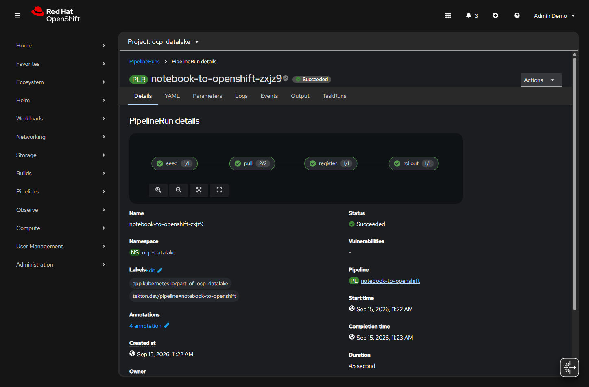
Step 06seed → pull → register → rolloutLa task pull valida keys de nuestro JSON (weights, bias, threshold), no la signature de un MLmodel.
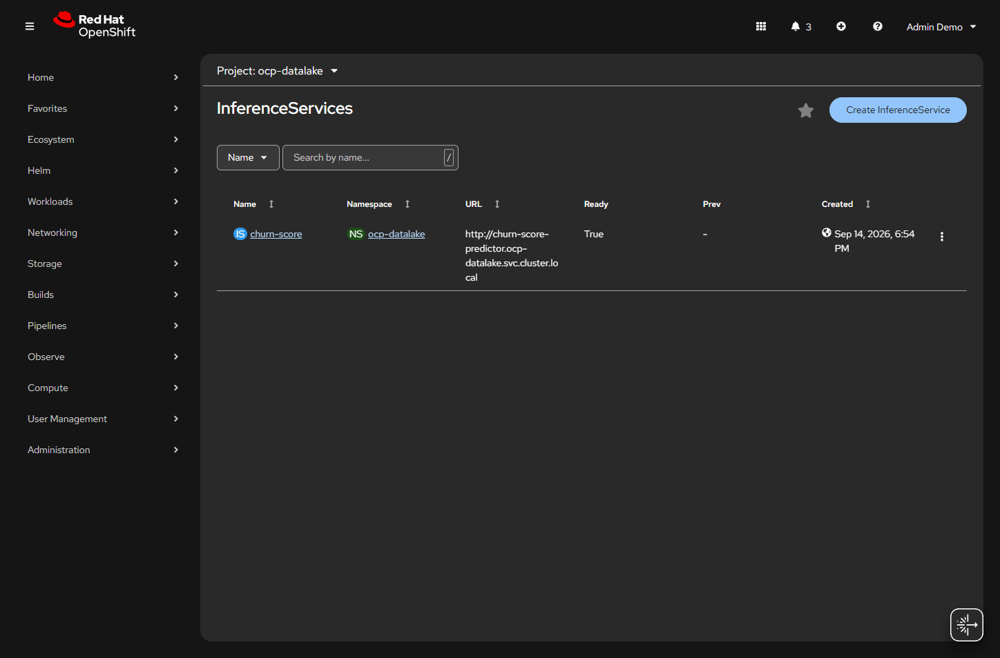
Step 07KServe ReadyInferenceService/churn-score Ready True. Runtime UBI Python, una réplica, sin request de GPU.
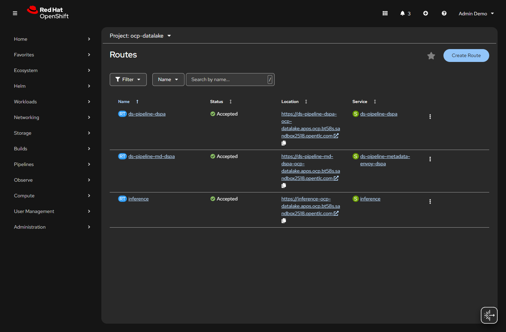
Step 08Route inferenceoauth-proxy delante del predictor. /predict y /healthz sin login en este PoC. El hostname OpenTLC rota.
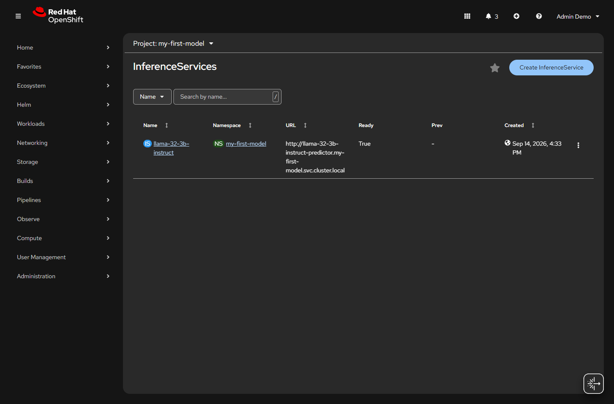
Step 09La L4 no es de churn-scorellama-32-3b-instruct en my-first-model retiene la única GPU. El modelo lineal no la disputa.
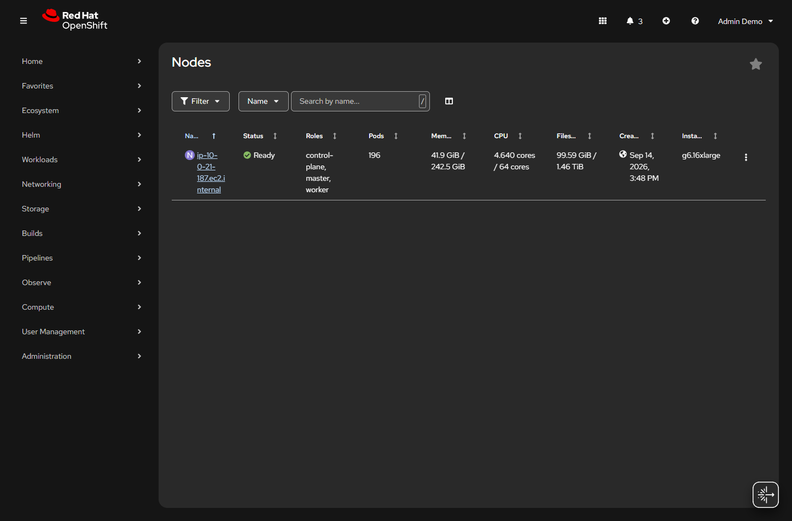
Step 10Un nodog6.16xlarge Ready: control-plane + worker, 64 cores. PoC de un solo nodo, no HA.
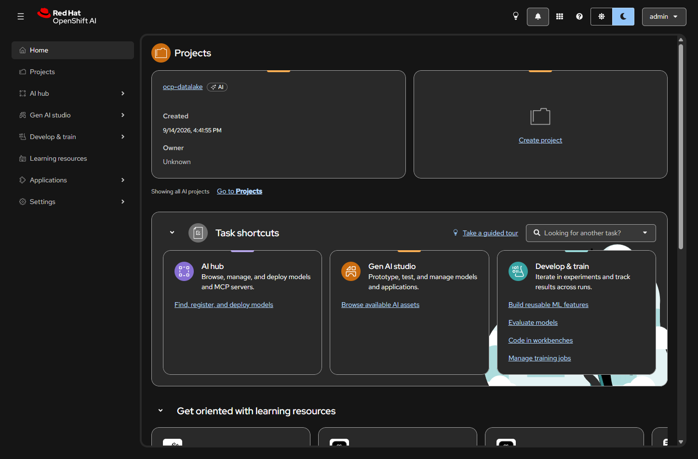
Step 11OpenShift AI 3.5Mismo proyecto, otra superficie. Admin federado por RHBK. Desde acá se dispara el pipeline KFP.
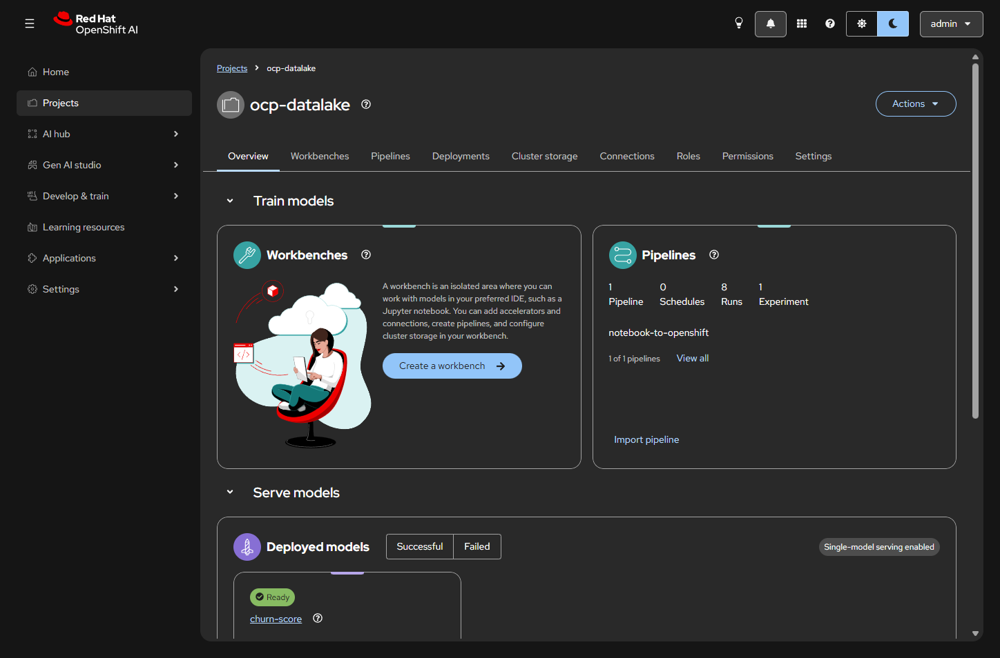
Step 12Pipeline + modelo en el mismo nsnotebook-to-openshift (8 runs) y churn-score Ready. Single-model serving enabled.
Hoy: conceptual alta, técnica baja. El flujo (registry → promoción → serving bajo política de clúster) está bien modelado. El contrato del artefacto no es MLflow: es un JSON de coeficientes, no un directorio MLmodel + model.pkl. No apuntes un registry de producción a este PoC.
Encaje
Qué entra
Alto
Lineal exportado a mano (coef_ / intercept_) → este JSON. Es churn-score v1, no “traer el modelo del registry”.
Medio
sklearn / XGBoost / LightGBM: cambiar el ServingRuntime (MLServer + mlflow, o ONNX + OVMS/Triton). No parches server.py. Cuidado con pickle vs UBI 3.12.
Bajo
Spark ML, Feature Store / Unity Catalog en inferencia, rutas DBFS o volúmenes UC.
Falta el puente real: Unity Catalog (models:/catalog.schema.model/1), OAuth M2M (no un PAT en un Secret) y egress. Detalle en el README.
 ocp-datalake
ocp-datalake